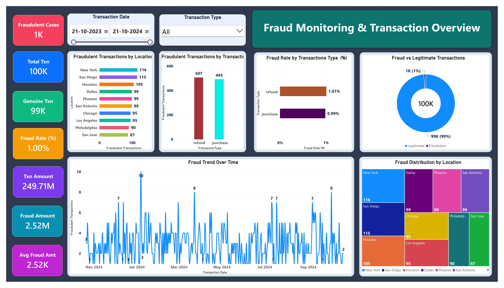

Fraud
Shield
| Analytics Dashboard
↓ Download Report
View Dashboard PDF ↗
Financial Fraud Detection Dashboard
Four-page Power BI dashboard showcase · Transaction Monitoring · Fraud Risk Analysis
01 · Transaction Overview
02 · Customer Behaviour
03 · Device Intelligence
04 · Banking Anomalies

← Previous
Page 1 of 4 — Fraud Monitoring & Transaction Overview
Next →